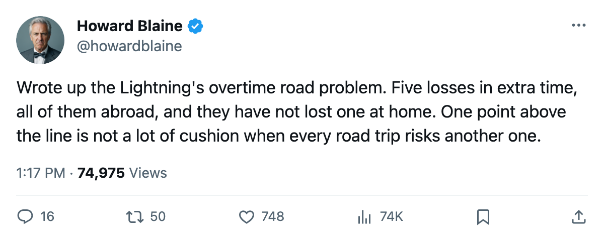
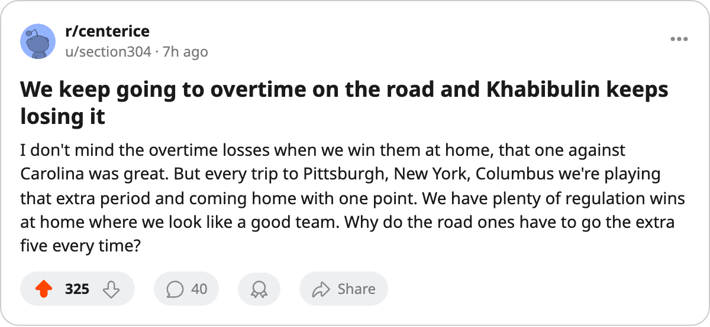

Five Overtime Losses, All Abroad: Tampa Bay Has Not Lost at Home After Regulation, and Sits 1 Point Above the Line
The Lightning have gone to overtime 7 times this season. Six of those games were on the road, and they have lost 5 of the 6.
 Howard BlaineSenior writer, The Blaine Rankings · The Hockey Gazette
Howard BlaineSenior writer, The Blaine Rankings · The Hockey Gazette
 Tampa Bay Lightning has played 25 games and sits 1 point above the Eastern Conference's eighth seed with 29 points. Carolina holds that eighth position at 28, on the same number of games, and the gap between them is a single overtime period in someone else's building.
Tampa Bay Lightning has played 25 games and sits 1 point above the Eastern Conference's eighth seed with 29 points. Carolina holds that eighth position at 28, on the same number of games, and the gap between them is a single overtime period in someone else's building.
The Lightning have gone to overtime 7 times this season. Six of those 7 games were on the road. They won 1 of the 6 abroad and lost 5. At home, they went to overtime once, on October 12 against  Carolina Hurricanes, and won. They have not lost an overtime game in front of their own crowd all season. Their home record is 8 and 3. Their road record is 4 and 10.
Carolina Hurricanes, and won. They have not lost an overtime game in front of their own crowd all season. Their home record is 8 and 3. Their road record is 4 and 10.
The split is the story
That home and away gap, 8 and 3 in one building against 4 and 10 in everyone else's, is the widest in the Eastern Conference. The 5 overtime losses account for 5 of the 10 road defeats. Without them, Tampa Bay's away mark would read 4 and 5, and its overall point total would sit at 34, which is 3rd in the conference.
That is arithmetic, not a prediction, but it frames the question the rest of the season asks: can a club built on a strong home record survive on the road in April? Last spring the Lightning played 10 playoff games and won 3. The home-ice formula that carried them through the regular season, 8 wins in 11 games at the St. Pete Times Forum, did not produce the same margin when the venue changed.
 Nikolai Khabibulin87 has started 23 of the 25 games and carries a 2.33 GAA on 0.883 saves. His grade in the Bureau's Book is 87. He is 11 and 12 on the season. The 5 overtime losses are his to carry along with everyone else, but he has no backup on the sheet with 5 or more games logged, which means every extra period this club plays falls to the same man who is already in net for 23 of 25.
Nikolai Khabibulin87 has started 23 of the 25 games and carries a 2.33 GAA on 0.883 saves. His grade in the Bureau's Book is 87. He is 11 and 12 on the season. The 5 overtime losses are his to carry along with everyone else, but he has no backup on the sheet with 5 or more games logged, which means every extra period this club plays falls to the same man who is already in net for 23 of 25.
The production is not the problem.  Cory Stillman82 has 27 points in 25 games, a pace of 89.
Cory Stillman82 has 27 points in 25 games, a pace of 89.  Vincent Lecavalier86 carries 26 points in 25 and sits at 86 overall in the Book. The offense generates 2.80 goals a night, which is 5th in the East by goals-for at 70. The defense sits at 63 against, 5th in the conference. Tampa Bay outscores its opponents by 7 over 25 games and has 29 points. That gap is the 5 overtime losses, and all 5 of them came on the road.
Vincent Lecavalier86 carries 26 points in 25 and sits at 86 overall in the Book. The offense generates 2.80 goals a night, which is 5th in the East by goals-for at 70. The defense sits at 63 against, 5th in the conference. Tampa Bay outscores its opponents by 7 over 25 games and has 29 points. That gap is the 5 overtime losses, and all 5 of them came on the road.
The business behind the record
Tampa Bay plays before 16,917 people a night at $81 a ticket, which is the 3rd-highest attendance in the league. Revenue is $42.56M and profit $17.36M against a $59.79M payroll, which runs $2.06M per point. That per-point figure is 12th in the league. It is not alarming, but it is not the cheap structure the clubs at the top of this race enjoy.  Nashville Predators runs $1.51M a point,
Nashville Predators runs $1.51M a point,  Calgary Flames $1.68M,
Calgary Flames $1.68M,  Dallas Stars $1.61M.
Dallas Stars $1.61M.
The league's overtime-loss table
Four clubs carry 5 or more overtime losses.  Los Angeles Kings leads at 6 and sits 14th in the Western Conference at 18 points, effectively out.
Los Angeles Kings leads at 6 and sits 14th in the Western Conference at 18 points, effectively out.  Chicago Blackhawks is 13th in the West at 19 points with 5 OT losses, also effectively out. Tampa Bay sits 7th in the East, 1 point above the line.
Chicago Blackhawks is 13th in the West at 19 points with 5 OT losses, also effectively out. Tampa Bay sits 7th in the East, 1 point above the line.  Colorado Avalanche has 5 and sits 6th in the West, 5 points back of 3rd. What separates a team collecting overtime losses from one that can absorb them is the rest of its record, and Tampa Bay's is better than Carolina's, which has only 2 overtime losses at 1 point back.
Colorado Avalanche has 5 and sits 6th in the West, 5 points back of 3rd. What separates a team collecting overtime losses from one that can absorb them is the rest of its record, and Tampa Bay's is better than Carolina's, which has only 2 overtime losses at 1 point back.
The week ahead sends Tampa Bay to Boston on December 7, to Chicago on December 8 and to Minnesota on December 10. Chicago is 1 and 10 at home this season. If the Lightning take 2 points from the United Center, the road overtime problem pauses. If they leave with 1 or none, the gap to Carolina narrows to 0 or widens to nothing, depending on what the Hurricanes do with their 57 remaining games.
Tampa Bay's entire overtime season has been played away from home, and it has lost 5 of the 6. The standings at Christmas are the standings in April, and right now the Lightning's Christmas standing is one overtime period above the line.

